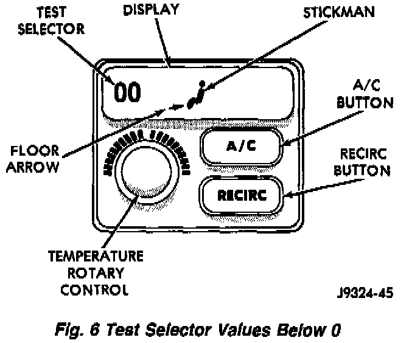
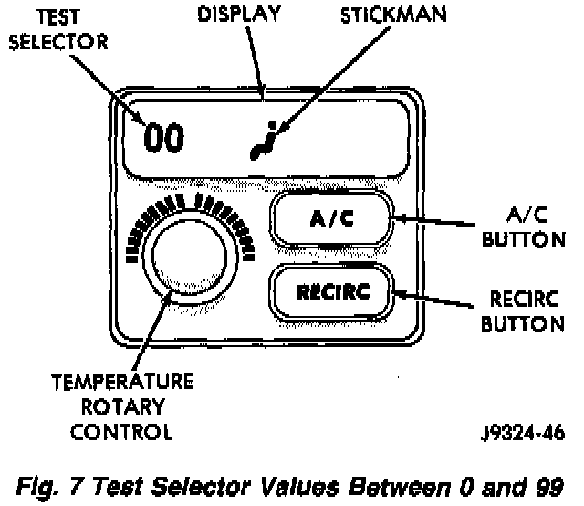
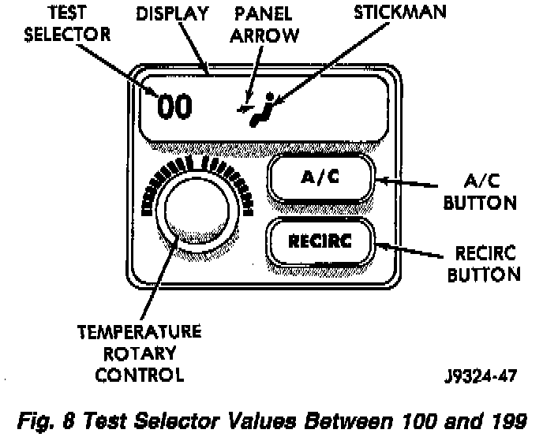
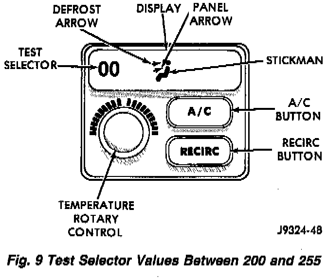
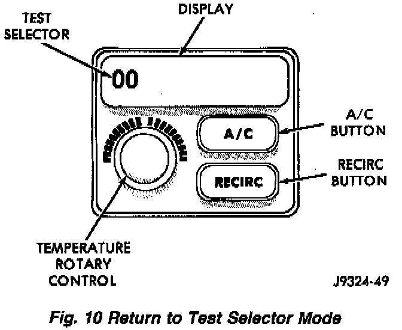

Diagnostics Test Selector
DIAGNOSTICS TEST SELECTORThe test selector is located in the same location as the temperature control point. The test selector is used to display fault codes, identify the test selection mode and is used to show the value of each circuit being tested.
Fig.6 Test Selector Values:

1. If the floor (bottom) arrow is showing, the test selector value will be a range of numbers below 0.
Fig.7 Test Selector Values Between 0 And 99:

2. If the stickman shows no arrows, the test selector value will be a range of numbers between 0 and 99.
Fig.8 Test Selector Values Between 100 And 199:

3. If the panel (middle) arrow is showing, the test selector value will be a range of numbers between 100 and 199m.
Fig.9 Test Selector Values Between 200 And 255:

4. If the panel (middle) and defrost (top) arrows are showing, the test selector value will be a range of numbers between 200 and 255.
Fig.10 Return To Test Selector Mode:

During diagnostics you may return to the test selector mode by simply turning the temperature (rotary) control one CLICK in either direction. Again the stickman and arrows are not shown in test selector mode. Also, you have the option of monitoring or testing another circuit.